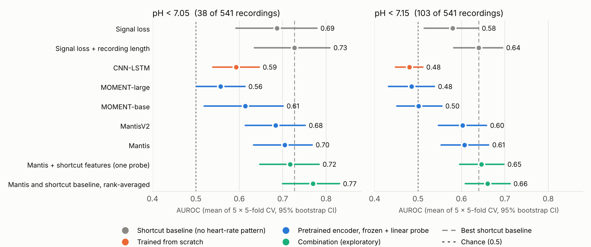

The public CTU–UHB benchmark contains 541 usable recordings. The figure reports the initial repeated cross-validation results; the rank-averaged combination is exploratory. In a subsequent confirmation on new folds at pH < 7.05, the combination reached AUROC 0.749 versus 0.722 for the shortcut baseline. The paired improvement was +0.027 (95% interval −0.016 to +0.071), so the gain remains uncertain. External validation is pending.

Figures and values: NE-code, public results and confirmation tables. This public acidemia benchmark uses a different outcome and cohort from the PAS 2025 neonatal encephalopathy poster.